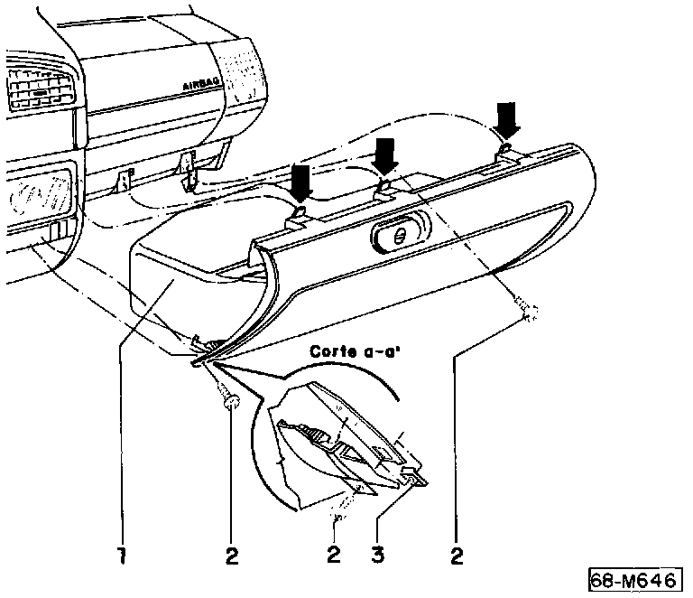

Removal and Installation of Glove Box

1 - Glovebox
2 - Phillips-head screws
3 - Clip
Removal
- Remove Phillips-head screws -2-.
- Pull glovebox downward. Make sure tabs (arrows) disengage.
Installation
- Installation is the reverse of removal.
^ Verify that clip -3- is in correct position.